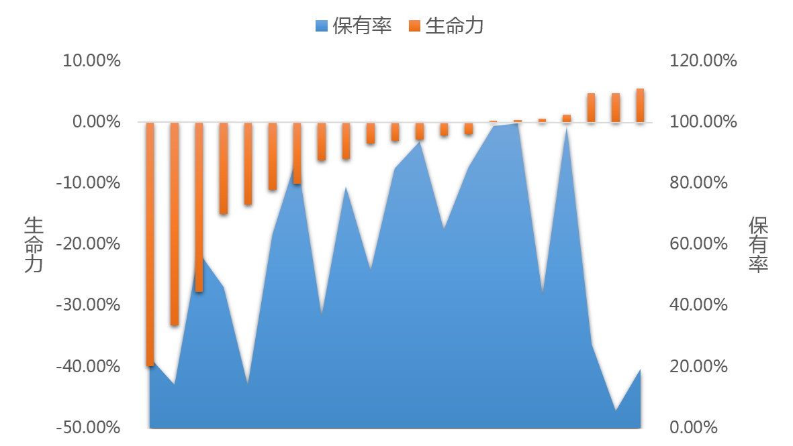
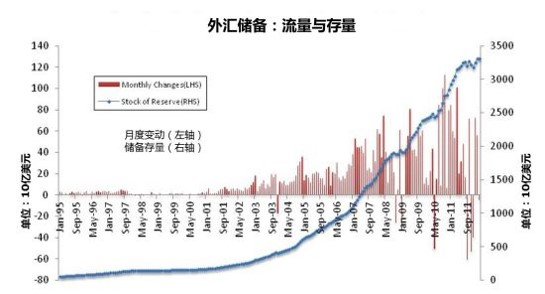
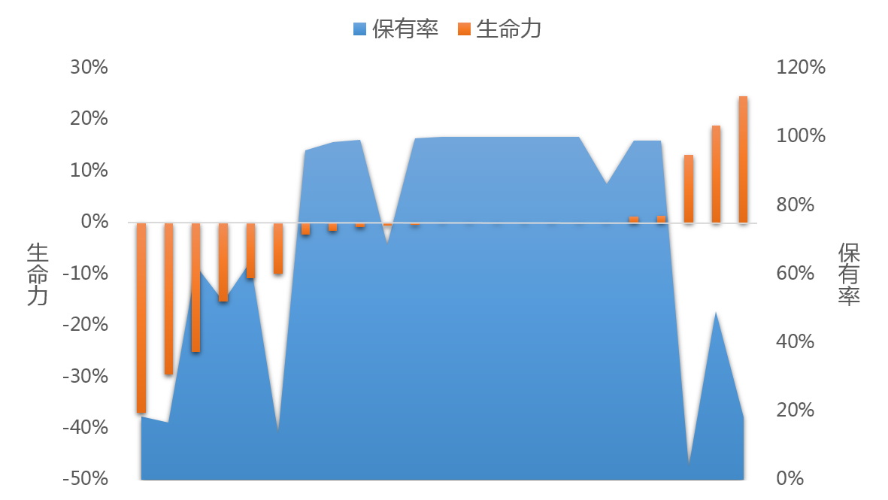
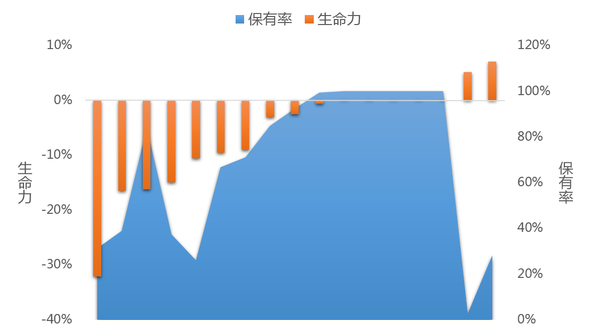

初中的兴趣课程，我们通过分析两个学期选课比例的变化来分析兴趣课程的开设情况。
兴趣课程的保有率和生命力
从流量和存量的角度分析课程情况，有两个学期都选择的课程比例作为存量，只选择一个学期的作为流量；
存量描述为保有率，流量递增的情况是增长率，流量递减的情况是衰减率，增长率和衰减率的差值作为生命力。用保有率描述选课的基础比例，生命力描述选课比例的变化。
第一步：分析模型的建立
首先，需要对所有变量进行定义：
- 保有率：两个学期都选的人数占选课人数的比例。
- 生命力：仅第二学期选的人数与仅第一学期选的人数的差值占选课人数的比例。
- 约束一：学校选课人数在学校总人数的比例不低于10%。
- 约束二：学校不同学期的选课的差异人数在学校总人数比例不高于10%。
两个约束是为了对异常数据做一个预处理，排除一定的噪声干扰。
具体公式如下：
第二步：实际数据的测试
学校的数据可以做分年度、分学校、分类别的数据分析，分年度就是时间轴的分析，保有率和生命力的时间变化，分学校就是各学校的差异分析，分类别就是兴趣课程不同类的差异。
- 分学校数据情况：
- 分时间数据情况：
- 分类别数据情况：

图1 兴趣课程流动情况（保有率和生命力）看点：保有率在合理区间的时候，生命力在小范围区间。简言之：保有率变，生命力变。
处于两端的学校保有率都比较低，课程选择流动性强。

图2 外汇储备：流量与存量对于分时间的数据，可以看出学校的保有率是否已异常变化，生命力指标如何发展，（由于目前数据缺少长久的年度数据积累，用外汇的数据做个配图。）
不同类别的保有率和生命力有较大差异，不同类别的约束的阈值设置会略有调整。

图3 兴趣课程类别A的流动情况（保有率和生命力）类别A生命力的负值和正值较多且幅度较大，可见此科目较为活跃，选课的流动性强。

图4 兴趣课程类别B的流动情况（保有率和生命力）类别B的生命力负值较多，正值偏少，可见此科目有下降趋势。
个体分析
对个体学校而言，根据兴趣课程的生命力，呈现了不同的趋势：
- 老龄化：
- 稳定期：
- 成长期：
| 学校 | 保有率 | 生命力 |
|---|---|---|
| a1 | 23.19% | -39.83% |
| a2 | 14.19% | -33.15% |
| a3 | 57.44% | -27.73% |
| a4 | 46.24% | -15.03% |
| a5 | 13.98% | -13.47% |
| a6 | 63.50% | -11.09% |
| a7 | 88.51% | -10.04% |
数据的生命力指标表现较大负值。可能没有剔除异常数据，造成大波动。
| 学校 | 保有率 | 生命力 |
|---|---|---|
| b1 | 36.54% | -6.20% |
| b2 | 79.03% | -6.04% |
| b3 | 51.35% | -3.43% |
| b4 | 84.85% | -3.03% |
| b5 | 93.72% | -2.78% |
| b6 | 64.76% | -2.12% |
| b7 | 85.36% | -2.00% |
数据的生命力指标表现较低负值。可以反映兴趣课程呈现发展弱势。
| 学校 | 保有率 | 生命力 |
|---|---|---|
| c1 | 98.66% | 0.26% |
| c2 | 99.69% | 0.31% |
| c3 | 43.39% | 0.61% |
| c4 | 98.81% | 1.19% |
| c5 | 27.60% | 4.69% |
| c6 | 5.63% | 4.75% |
| c7 | 19.42% | 5.52% |
数据的生命力指标表现较低正值。可以反映兴趣课程呈现发展强势。
由于实际数据没有出现生命力指标表现较高正值的情况，故不作分析。
结束语：
这篇分析算是一种全新的尝试，把兴趣课程的流动情况与社会形态的生老病死进行类比。借用他们的相关指标对教育行业进行解释。
将来，也会有更多的尝试，将不同领域的方法综合应用。